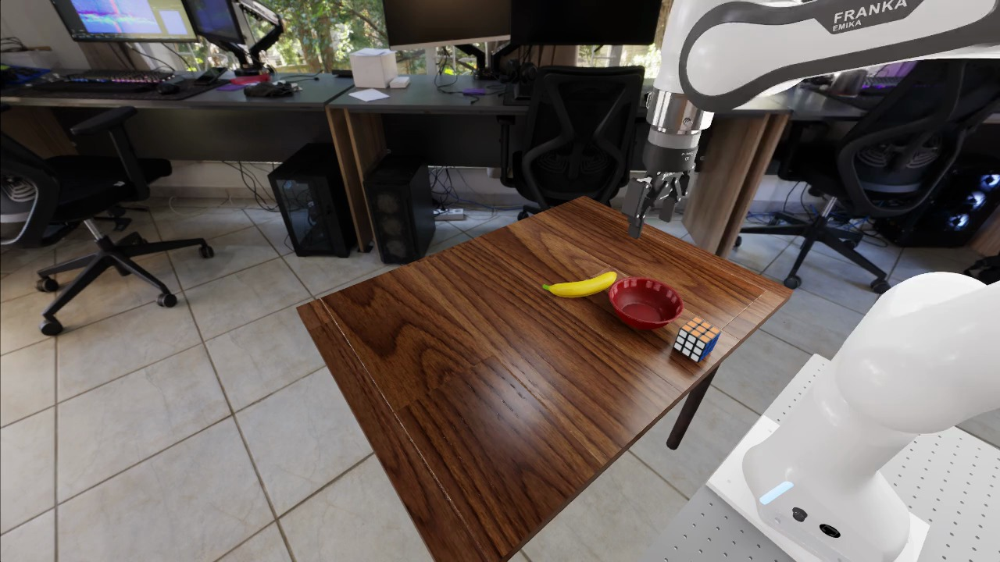
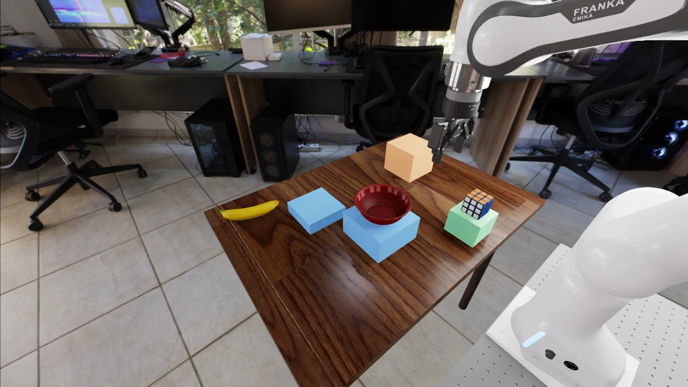
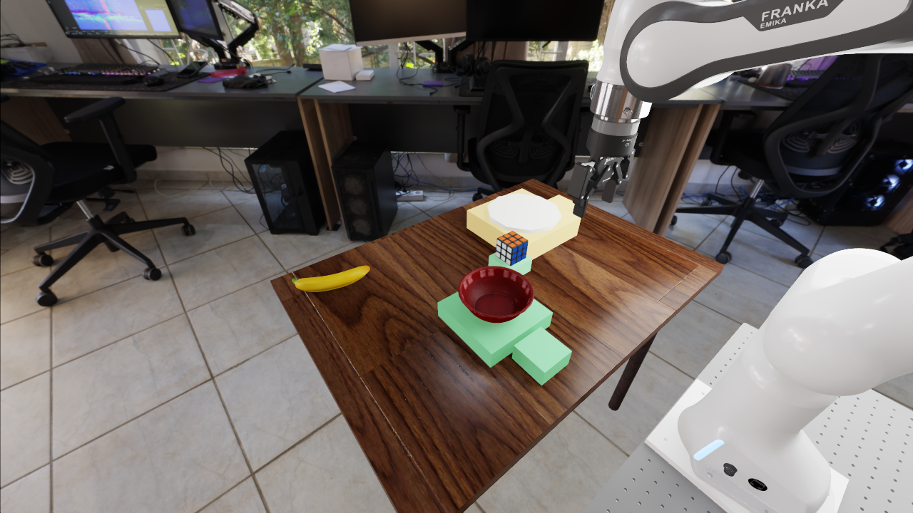

What each scene must make possible
Design one clear starting arrangement per family first. The same scene must permit both opposing goals. We can later generate the required variants; you do not need to hand-build 29 scenes.
Both policies use these scenes. Three wording forms express each goal, but they do not need different geometry. Only the Rubik's cube is manipulated; the bowl and, for DIST, the plate remain task references.
| Experiment and current reference picture | Starting arrangement and both required outcomes | Pictures useful for your design proposal |
|---|---|---|
LAT / LEFT-RIGHTTwo unobstructed lateral landing areas |
Start: cube and bowl centers have the same robot-left/right coordinate within 5 mm. Separate them front-to-back so they do not overlap. Cube starts on a support, ungrasped. Goal A: cube center at least 30 mm to the robot's left of the bowl.
"Put the Rubik's cube to the left of the bowl." Goal B: cube center at least 30 mm to the robot's right of the bowl.
"Put the Rubik's cube to the right of the bowl." Design priority: accessible grasp, clear approach, and roomy landing areas on both sides, away from the table edge. Leave a transport route that avoids the bowl. Robot-left/right is not image-left/right. Colors must not stand in for spatial geometry. |
Useful extra: top view with robot-forward/left directions and approximate distances marked. Keep bowl, robot and cameras unchanged across the three pictures. |
HEIGHT / HIGHER-LOWERGrounded supports at two reachable heights |
Start: cube center and bowl center are at the same height within 5 mm, on separate grounded supports. Bowl remains at an intermediate height. Goal A: released cube center at least 30 mm higher than the bowl center.
"Put the Rubik's cube higher than the bowl." Goal B: released cube center at least 30 mm lower than the bowl center.
"Put the Rubik's cube lower than the bowl." Design priority: broad stable landing surfaces, no floating geometry, gripper clearance, and a transport corridor that does not pass through the bowl. The lower goal must be above the table, not below it. Heights refer to object centers, not support tops or pixel height. Later variants must put the upper support on both lateral sides. |
Useful extra: side elevation with the three object-center heights and support tops labeled. A single overhead picture cannot demonstrate 3D height. Show the arm's approach/transport clearance too. |
DIST / NEARER ONE OF TWO ANCHORSA recognizable bowl and a distinct plate |
Start: cube is equally distant from bowl and plate centers in 3D, within a 5 mm difference. Both anchors are visible, distinct, supported and stationary. Goal A: cube is at least 30 mm closer to the bowl than to the plate.
"Put the Rubik's cube closer to the bowl than to the plate." Goal B: cube is at least 30 mm closer to the plate than to the bowl.
"Put the Rubik's cube farther from the bowl than from the plate." Design priority: a clearly recognizable plate, separate clear landing regions nearer each anchor, and a grasp/transport route that avoids both. No need to put the cube inside the bowl or on the plate. This tests distances relative to two anchors, not "closer than the initial position." Later variants must swap bowl/plate lateral arrangement. |
Useful extra: top view with the two cube-to-anchor distances; include a side view if anchor heights differ. Do not move either anchor when staging the two goal pictures. |
Your "too close to the robot" concern has a RoboLab basis
The RoboLab paper, section IV-C / Figure 9, describes successful placements around 0.5 m from the robot origin in its object-position sensitivity analysis. Figure 9 shows a success-conditioned posterior for pi0, pi0.5 and pi0-FAST on two banana tasks, not our cube/support experiments or N3/D1. This is a design prior, not a universal optimum.
Metric caveat: Appendix B defines pose distance using both translation and orientation. Do not treat the plot as a calibrated pure-distance success curve. In a new proximity comparison, keep object orientation fixed and record translational robot-to-object distance separately.
The official scene-authoring guide uses table center near (0.55, 0.0) m, suggested placement bounds X 0.30-0.80 m / Y -0.40 to 0.40 m, and 5 cm table-edge clearance. X points forward, away from the robot. X is not the same as radial distance.
Existing-data check: in the 39-candidate LAT batch, 2 of 7 layouts with authored cube-root X below 0.30 m pass all six trials, compared with 18 of 32 farther-forward layouts. LAT-057 starts at X=0.258 m. This makes proximity worth investigating, but some close layouts succeed and many farther ones fail.
This split is post-hoc and confounded by other pose differences. It is not a causal distance test or learned-policy result. A proper future comparison would hold robot/cameras and relative task geometry fixed while translating the proposed object/support arrangement.
Adopted targets for the next design proposal
The following makes the paper guidance actionable without inventing a fully validated scene. No frozen candidate or running experiment is changed. Exact root transforms, support heights and path clearances still need to be realized against the pinned assets.
| Design parameter | Target for the proposal | Evidence boundary |
|---|---|---|
| Initial pickup region | Aim for the initial cube geometric center approximately 0.50 m from the measured robot root. Convert that to an actor-root pose using the measured center offset, and record both distances. Hold object orientation fixed. | Engineering starting choice motivated by RoboLab, not a measured optimum for our models. The paper's plot uses a pose-distance metric and different policies/tasks. |
| Table placement | Use official authoring guidance: forward X 0.30-0.80 m, lateral Y -0.40 to 0.40 m, table center near X=0.55 m, and 5 cm edge clearance. Check full footprints, not just centers. | Resolve against our actual table bounds and frame. These current-documentation values are not retroactive acceptance thresholds. |
| Visual and motion controls | Keep robot and cameras fixed. Keep original object orientations for the distance comparison. Provide clear approach and transport paths for both goals. | A grasp pose being reachable does not prove the complete loaded trajectory is collision-free. |
| Task geometry | Retain the SGW neutral-start tolerance of 5 mm, opposed-goal margin of 30 mm, and existing pickup, release, stability and reference-motion rules. | These come from SGW, not from either paper. A redesigned pool needs its own prospective record. |
What Figure 5 of the counterfactual VLA paper adds
When Vision Overrides Language, Figure 5, separates object recognition, spatial selection, goal targeting and out-of-distribution generalization. Stack / Plate / Basket is the closest analogue to SGW: the same manipulated object has different requested destinations.
We can investigate this principle within SGW's existing six conditions per layout. It does not require adding the paper's task families or increasing the planned episode count.
Use the experimental idea
- Match the starting reset across opposing goals, then change only the registered instruction.
- Keep the same reset across the three equivalent wording forms.
- Distinguish movement toward the requested relation from full physical completion.
- Preserve counterbalance so a fixed visual side cannot stand in for the language.
Do not import the intervention or claims
- No LIBERO switch, extra objects, new core model, fine-tuning or CAG guidance change.
- The paper's pi0.5 results do not establish N3/D1 performance.
- Our same-cube task cannot use cube contact alone as proof of spatial language grounding.
- Current scripted-controller failures are not evidence of a learned model's vision shortcuts.
The paper's real-world study uses FR3 + Robotiq, fine-tuned pi0.5, 20 versus 1 demonstrations for its in-domain/under-observed tasks (OOD zero-shot), and 10 evaluation trials per instruction. It varies object positions across trials; we should not describe its examples as exact-reset matched SGW blocks. Its task-training frequencies are not known for our checkpoints.
Download the explicit source-bound design proposal and transfer limits
Smallest useful handoff from you
Start with HEIGHT if you want to fix one scene first: send the neutral-start picture, a proposed higher placement, and a proposed lower placement, plus a side view. An annotated screenshot or sketch is enough for the first design discussion.
If you edit in Isaac Sim, send a new .usda file with its asset references. Move each object's root prim using the stage tree, not its child mesh by dragging in the viewport. RoboLab's documentation warns that mesh-only movement separates geometry from the recorded object transform.
Keep the robot/base and camera calibration fixed. Extra top/side pictures are engineering views only, not additional policy observations. The agent can produce the three actual policy-camera captures later: left shoulder, right shoulder, and wrist.
This picture checklist is a design handoff, not an added experimental gate. Manually staged goal images are proposals; they do not replace the recorded scripted grasp/place checks.
Requirements that do not change when the scene is redesigned
Cube begins supported and ungrasped; only the cube is manipulated. Reference-center movement must stay within 5 mm. The cube must be lifted at least 30 mm for three consecutive recorded steps, then released onto a valid support. The final half-second must satisfy the requested relation, support and detachment, linear speed below 0.02 m/s and angular speed below 0.2 rad/s. Qualification uses both goals with three reset trials each; these rules are from SGW-01, not minimum requirements imposed by RoboLab itself.
- Frozen study:
experiments/workshops/spatial_grounding_v1/spec/EXPERIMENT_SPEC.md, sections 4-5, and exactprompts.json. - Official RoboLab project; paper sensitivity analysis; manual USD scene workflow.
- Official documentation reference revision:
ad45d4f974725d020f82c2b0d77d78533aeba2b3. This does not upgrade the study's pinned RoboLab runtime. - Counterfactual VLA paper, Figure 5, section VII methods/results and Appendix C: design inspiration only; no imported results or intervention.
- LAT and HEIGHT pictures are frame 0 from the hash-verified original trial videos. DIST is the original independent-review PNG, bound to the sealed SGW-ENG-007 review. Exact source/image hashes; existing-data proximity diagnostic.